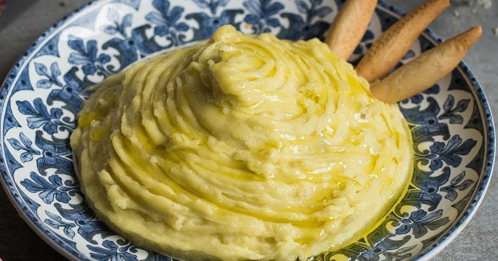

VOLVER
Ajoatao
Ingredientes (4-6 personas)
Producto
Cantidad
patatas
500 g
ajos
2 o 3 dientes
sal
al gusto
AOVE
yema de huevo
1
zumo de limón
unas gotas
aceite de oliva virgen extra
150 - 175 ml

Elaboración
Pela las patatas, córtalas en trozos y cuécelas en abundante agua con sal hasta que estén muy tiernas.
Pela los dientes de ajo, quítales el germen si quieres que piquen menos y machácalos en un mortero con un poco de sal hasta obtener una pasta fina.
Escurre las patatas cocidas, ponlas en un bol grande y cháfalas con un tenedor o un pasapurés hasta conseguir un puré sin trozos grandes.
Añade la pasta de ajo al puré de patata y mezcla bien hasta que quede todo integrado.
Si vas a usar huevo, añádelo ahora (crudo) y remueve para que se reparta por toda la mezcla.
Ve incorporando el aceite de oliva virgen extra en hilo fino, sin dejar de remover, hasta que la mezcla emulsione y quede muy cremosa.
Agrega poco a poco un poco del agua caliente de cocer las patatas para ajustar la textura, mezclando hasta lograr una crema espesa pero suave.
Prueba de sal, añade si hace falta y, si te gusta, incorpora unas gotas de limón o un chorrito muy pequeño de vinagre. Mezcla de nuevo.
Deja reposar unos minutos a temperatura ambiente y sirve el ajoatao acompañado de pan, carnes o lo que quieras.